The Missing Third Position
The problem is not that being depressed is fashionable. The problem is that a culture with no template for ordinary suffering can only toggle between hiding pain and performing it.
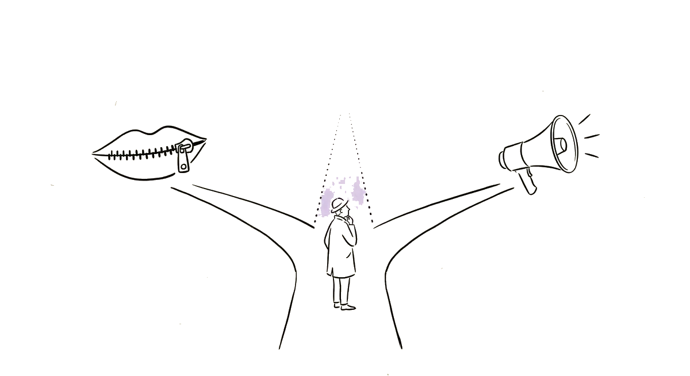
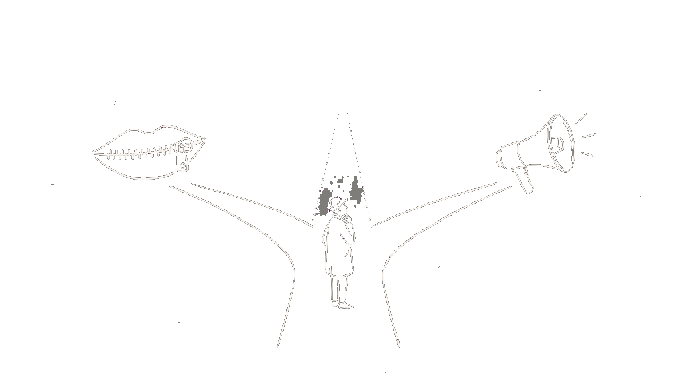
Suffering as Ordinary
Lifetime depression diagnoses in the United States rose from 19.6% to 29.0% between 2015 and 2023 (Gallup, n = 5,167).[1]Gallup, “Depression Rates Reach New Highs” (2023) → Forty percent of U.S. high school students report persistent sadness or hopelessness (CDC YRBS, 2023).[2]CDC YRBS 2023 Results → Meanwhile, 72% of Gen Z women say mental health challenges are an important part of their identity (Skeptic Research Center, n = 3,014).[3]Skeptic Research Center (2022), n = 3,014 American adults, DASS-21 validated →
This paper argues that these statistics indicate a cultural context beyond mere diagnostic shifts. It posits that this context is characterized by a lack of established frameworks for suffering that are neither stigmatized nor aestheticized. Specifically, a cultural template for 'ordinary' suffering — that which is neither concealed nor overtly displayed, neither deemed shameful nor inherently interesting — appears to be absent. The ongoing discourse regarding the authenticity of sadness, often framed as 'genuine or performed,' may itself be a manifestation of this underlying issue.
While the aestheticization of melancholy has historical precedents, such as Ficino's reframing of it as a mark of genius in 1489,[4]Zimmermann, “History of Melancholy” (1995) → this paper contends that the contemporary manifestation warrants distinct analysis. The focus of this inquiry is to examine the unique characteristics of the current phenomenon compared to historical iterations, to identify its beneficiaries, and to explore the structural factors contributing to its prevalence. This analysis culminates in the proposition that a third conceptual position regarding suffering is required within the prevailing cultural discourse.
The Culture Can Only Toggle
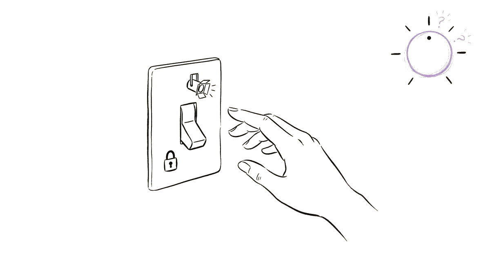
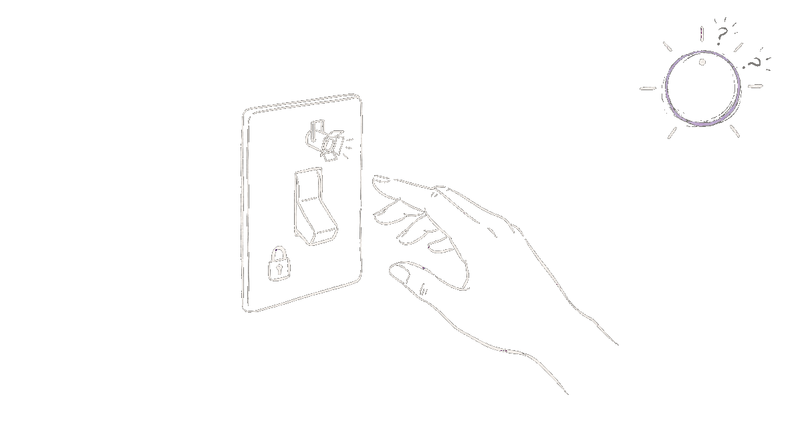
Efforts toward destigmatization have achieved notable outcomes. However, a predominant observed shift has been from the concealment of suffering to its public expression. This cultural trajectory appears to have largely shifted from a state characterized by Position 1 to one predominantly reflecting Position 2, with Position 3 remaining less widely established.
Quantitative data supports the prevalence of these two positions. For instance, a Skeptic Research Center survey (n = 3,014, DASS-21 validated) reported that 72% of Gen Z women agree that mental health challenges constitute an important aspect of their identity, compared to 27% of Boomer men.[3]Skeptic Research Center (2022), n = 3,014 American adults, DASS-21 validated → Additionally, a Harmony Healthcare IT survey (n = 1,010 Gen Z Americans) found that 46% had received a formal diagnosis and an additional 37% believed they had an undiagnosed condition, indicating that 83% of Gen Z perceive themselves through a clinical lens.[5]Harmony Healthcare IT, “State of Gen Z Mental Health” (2025), n = 1,010 → Blue Shield of California further reports that 94% of Gen Z youth experience regular mental health challenges.[6]Blue Shield of California poll (Sept 2025) → These data points indicate a widespread integration of mental health challenges into personal identity and a prevalent clinical interpretation of self, which are consistent with the characteristics of Position 2.
Concurrently, characteristics of Position 1 continue to be observed, with demographic variations. For example, African American men remain the demographic group exhibiting the lowest willingness to seek mental health services, with 30% expressing willingness compared to 51% of non-African American males (Ward & Mengesha, PMC).[7]Ward & Mengesha, PMC (2019) → The National Survey on Drug Use and Health (SAMHSA, 2021–2023, pooled data) further confirms that white and multiracial adults access mental health services at significantly higher rates than Black, Hispanic, or Asian adults.[8]SAMHSA NSDUH 2021–2023 Race/Ethnicity Companion Report → Thus, both positions are observed to coexist, exhibiting demographic stratification.
Not New, But Different


The template is ancient. Zimmermann traces melancholy as a fashionable pose to Hippocrates; Ficino formalized the link between Saturn and intellectual greatness in 1489.[4]Zimmermann, “History of Melancholy” (1995) → Frink documents the Romantics using melancholy as protest against Enlightenment rationalism.[9]Frink, “Romantic Melancholy” (2016) → Wurtzel’s Prozac Nation and the 1990s memoir wave established depression as a literary genre.[10]Washington Post, “Prozac Nation at 30” (2024) → This historical progression often follows a pattern of reframing, fashioning, marketing, and subsequent backlash.
The present era introduces a distinct mechanism: identity fusion at algorithmic scale. Ficino positioned melancholy as a pose, the Romantics as an aesthetic, and Prozac as a diagnosis. Contemporary digital platforms, exemplified by TikTok, facilitate its integration into self-identity, with algorithms designed to perpetuate user engagement.
The empirical evidence for algorithmic reinforcement is specific. Meta’s own internal research (leaked 2021) found that 32% of teen girls reported Instagram worsened their body image, and 13.5% reported it exacerbated suicidal thoughts.[11]2021 Facebook Files leak; originally Wall Street Journal → A Frontiers in Psychology study (2025) found that test accounts simulating 13-year-olds were exposed to feeds centered on depressive content in under one hour, with half of recommended videos focusing on depressive themes after just 15–20 minutes.[12]Frontiers in Psychology, algorithm rabbit hole study (2025) → A meta-analysis of 17 RCTs (n = 5,624) found that restricting social media use improved well-being with an effect size d = 0.17 (95% CI 0.08–0.27), and 5 of 7 studies measuring depression found significant reduction.[13]JMIR, Meta-analysis of 17 social media restriction RCTs (2024–2025), n = 5,624 → Haidt and Twenge document a 134% rise in depression among U.S. college undergraduates between the early 2010s and 2020, replicated across Anglosphere countries.[14]Haidt & Twenge, “The Anxious Generation” data (2024) →
Previous eras involved performance; however, they lacked a closed feedback loop integrating performance, identity, community, and an automated system designed to perpetuate this loop.
The Recovery Paradox
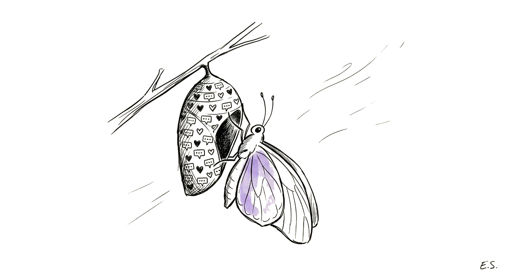
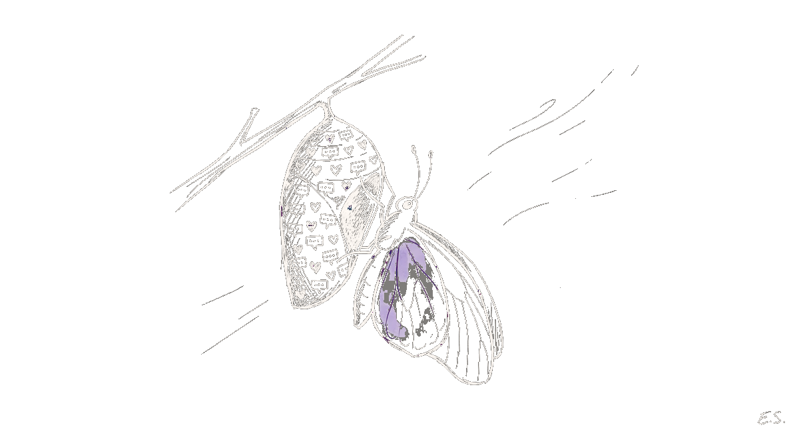
It has been proposed that when suffering becomes central to an individual's identity, the prospect of recovery may be perceived as a threat to that self-concept. Byron could stop performing melancholy and still be Byron. However, for individuals whose social identity, online presence, community engagement, and self-concept are significantly structured around expressions associated with terms like '#sadgirl,' disengaging from this state may lead to an identity crisis, which can be a psychologically challenging experience.
The prevalence of self-diagnosis via social media platforms has been documented. 30% of Gen Z self-diagnose mental illness based on social media content (Scimatic, 2024).[15]Scimatic, Self-diagnosis prevalence study (2024) → Among the 100 most popular ADHD TikTok videos (~500 million combined views), 52% were classified as misleading; non-healthcare providers produced misleading content at 55.1% versus 27.3% for providers (Yeung et al., Canadian Journal of Psychiatry, p < 0.001).[16]Yeung, Ng & Abi-Jaoude, Canadian J. of Psychiatry (2022), 100 top ADHD TikToks → A forthcoming Harvard Petrie-Flom review (2025) indicates that 84% of TikTok mental health videos are deceptive, with only 9% of creators possessing relevant qualifications.[17]Harvard Petrie-Flom, “Dr. TikTok” (2025) → The volume of 17.6 million TikTok posts under 'depressed girl aesthetic' suggests a shift from individual expression to a recognized content genre.[18]The Batt, “Depression Isn’t Aesthetic” (2024) →
Phase Learning reports that algorithmic reinforcement may contribute to feedback loops that discourage help-seeking.[19]Phase Learning, “Romanticizing Mental Illness” (2024) → A forthcoming Current Psychology study (2026) is anticipated to confirm the association between mental health TikTok consumption and both self-reported symptoms and perceived prevalence.[20]Current Psychology, TikTok MH content & symptom self-report (2026) → The dynamic where ongoing content creation may necessitate the perpetuation of certain states, termed the 'serialization problem,' is proposed as a factor that intensifies these phenomena in the platform era, distinguishing it from previous cultural cycles.
THE BIND
It has been suggested that the apprehension associated with recovery may stem not solely from the difficulty of the process, but from a perceived risk of losing a recognizable aesthetic identity that facilitates social connection within certain communities.
Disparities in Mental Health Focus and Care
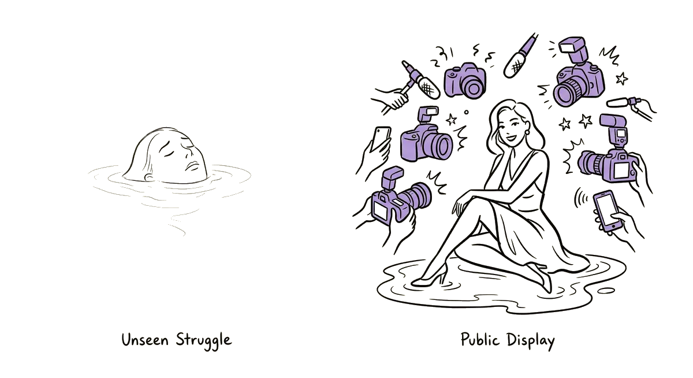
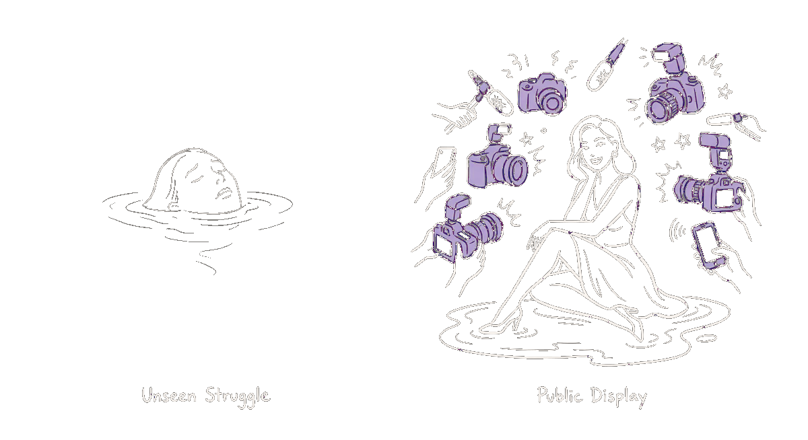
The cultural phenomenon of aestheticized mental distress, often exemplified by trends such as the 'sad girl aesthetic,' does not represent a universal cultural shift. Instead, it appears to be a demographic-specific cultural trend that gains prominence among certain populations, while significant disparities in mental health care access and outcomes persist for other groups facing greater structural barriers.
DBSA reports that 48% of white Americans who need care receive it, compared with 31% of Black Americans and 22% of Asian Americans; LGBTQ individuals face 2.5 times the depression risk.[21]DBSA, “Disparities in Mental Health” (2021) → SAMHSA’s pooled NSDUH data (2021–2023) confirm that white and multiracial adults receive services at significantly higher rates than Black, Hispanic, or Asian adults.[8]SAMHSA NSDUH 2021–2023 Race/Ethnicity Companion Report → The sad girl aesthetic, meanwhile, is dominated by white, thin, conventionally attractive women.[22]Daily Cal, “Social Media’s Sad Girl” (2022) →
The Lancet’s 2025 meta-analysis (1.3 million people, 421 studies) documents increasing depression among Black populations after 2020, driven by both COVID and the aftermath of George Floyd’s murder.[23]Lancet meta-analysis (2025), 1.3M people, 421 studies → Assari’s intersectional analysis shows the effects are multiplicative, not additive: high income is protective for white women but becomes a risk factor for African American men.[24]Assari, PMC (2017) → Mereish, examining 42 intersectional groups, finds past-year depression prevalence ranging from 3.4% to 31.4%.[25]Mereish, PMC (2023) → CDC YRBS data show 53% of female high school students report persistent sadness, with LGBQ+ students at 2–3× the rate of heterosexual peers.[2]CDC YRBS 2023 Results →
These data indicate that cultural attention to mental distress, particularly in aestheticized forms, may not align with the populations experiencing the greatest structural barriers to mental health care or the highest prevalence of severe conditions. Significant disparities persist in both the experience of mental health challenges and access to support across different demographic groups.
The Privatization of Mental Health
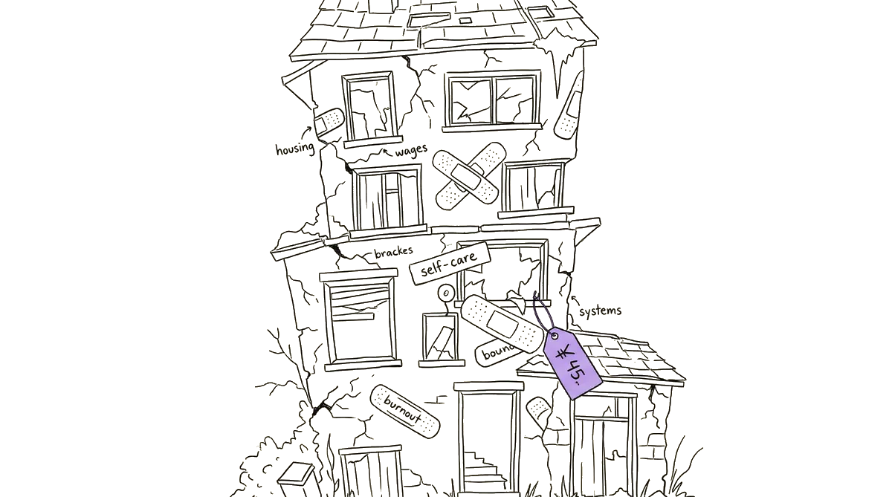
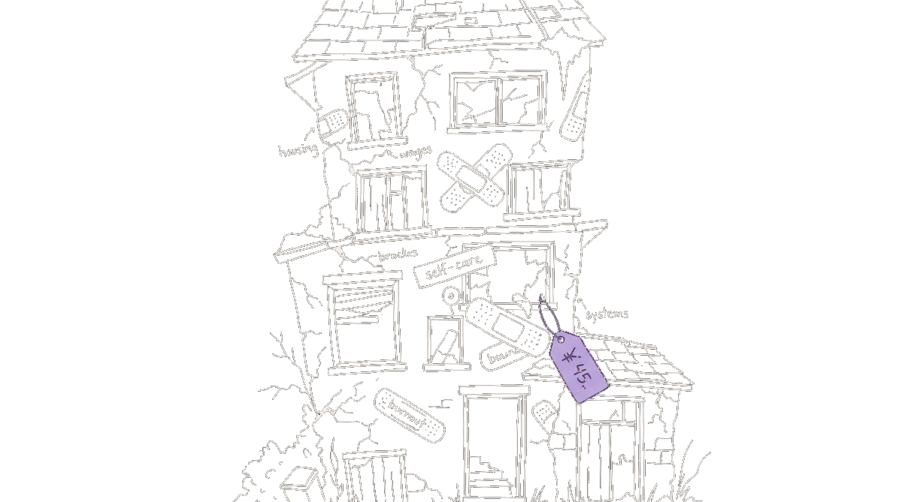
Some analyses suggest that therapy-speak individualizes suffering, potentially diminishing its political implications. Bandinelli and Pinzón Arteaga argue that the therapeutic frame translates structural problems into personal pathology: poverty becomes “burnout,” discrimination becomes “anxiety,” exploitation becomes “boundary issues.”[26]Bandinelli & Pinzón, Mad in America (2025) → While its vocabulary may be perceived as empowering, this diagnostic framework tends to locate problems within the individual rather than within systemic structures.
The economic infrastructure is now substantial. The online therapy market reached $4.39 billion in 2025, projected to hit $14.10 billion by 2034.[27]GlobeNewsWire, Online therapy market report (2025) → BetterHelp alone generated $1.03 billion in 2024 revenue with 5 million+ users.[28]TapTwice Digital, BetterHelp statistics (2024) → However, reported outcomes vary: BetterHelp spent $900 million on marketing in 2023; a survey by First Session indicated that 70% of users reported a poor experience and 30% became less likely to pursue therapy afterward.[29]First Session, “BetterHelp Risk” (2025) → These trends suggest a business model that prioritizes customer acquisition, potentially over clinical outcomes.
PMC research documents therapy language being utilized in ways that contribute to epistemic injustice — employing therapeutic vocabulary to delegitimize another person’s emotional experience.[30]PMC, “Unmasking Therapy-Speak” (2025) → Cosmetic pharmacology, which Kramer identified in Listening to Prozac, represented an earlier form[31]Rhetoric of Depression, UF Press (2023) → — the social media manifestation of this trend is notable for its dissemination without requiring medication, often through mechanisms such as hashtags.
Limitations of the Backlash Against Diagnostic Expansion
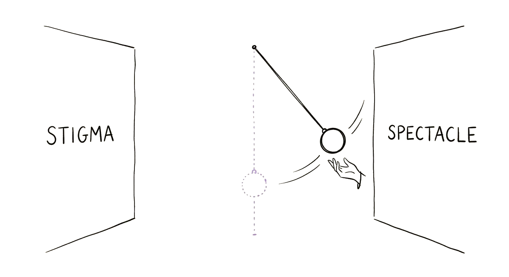
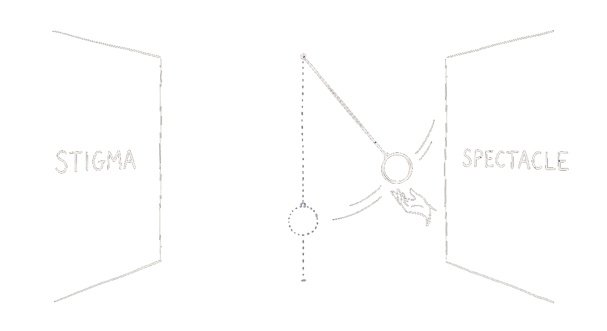
Critiques regarding the expansion of psychiatric diagnoses often highlight concerns about overdiagnosis. Evidence supporting these concerns is substantial: a Johns Hopkins study (Mojtabai, 2013) identified approximately 1 in 4 depression diagnoses in U.S. primary care as false positives, indicating patients who did not meet criteria on structured clinical interview.[32]Mojtabai, Johns Hopkins, depression overdiagnosis (2013) → Similarly, Canadian primary care data indicate misdiagnosis rates of 65.9% for major depressive disorder and 71.0% for generalized anxiety disorder.[33]PMC, Canadian primary care misdiagnosis rates → The observed trends align with critiques of diagnostic inflation, such as those by Frances concerning DSM-5. For instance, U.S. ADHD diagnoses increased by 67% from 6.1% to 10.2% between 1997 and 2016, with an additional 15.2% rise in adult ADHD from 2020 to 2023.[34]CDC ADHD data; Psychiatric Research and Clinical Practice (2024) → Gallup’s survey data further show lifetime depression diagnoses increasing from 19.6% to 29.0% between 2015 and 2023, with women’s rates rising at nearly twice the rate of men’s.[1]Gallup, “Depression Rates Reach New Highs” (2023), n = 5,167 →
However, the proposed solutions or 'prescriptions' emerging from this backlash face criticism for potentially unintended consequences. Critics argue that such a backlash risks reverting cultural attitudes towards suffering to a state where it is perceived as shameful and hidden (Position 1), rather than advancing towards an acceptance of suffering as an ordinary human experience (Position 3). This concern is articulated by those who argue that dismissing the need for diagnosis may disproportionately affect individuals who genuinely require clinical support. For instance, some perspectives suggest that the emphasis on reducing diagnoses might inadvertently increase stigma for those with severe conditions, a phenomenon consistent with aspects of the Gronholm and Thornicroft 'subtyping' paradox. This paradox suggests that attempts to differentiate between 'true' and 'false' cases of mental illness, while aiming to reduce overdiagnosis, can paradoxically heighten the perceived stigma for individuals who are deemed to have 'genuine' conditions, by creating a hierarchy of suffering and potentially invalidating the experiences of others.[36]Gronholm & Thornicroft, PMC (2022) → Furthermore, discussions, such as those documented by Article Club, have surfaced the perspective that individuals may seek diagnoses as a means of validating their experiences and seeking permission to acknowledge their struggles.[35]Article Club, Discussion #502 (2025) →
POTENTIAL IMPLICATIONS
It has been argued that a backlash against diagnostic expansion, if it fails to promote an understanding of suffering as an ordinary human experience (Position 3), may inadvertently contribute to a return to cultural norms where suffering is stigmatized and concealed (Position 1). This suggests that merely swinging between extremes is insufficient; a new, balanced approach is required.
The Third Position
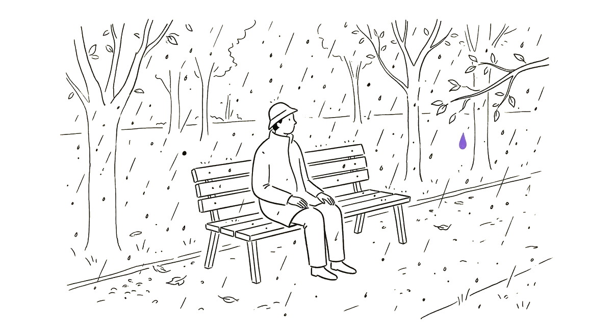
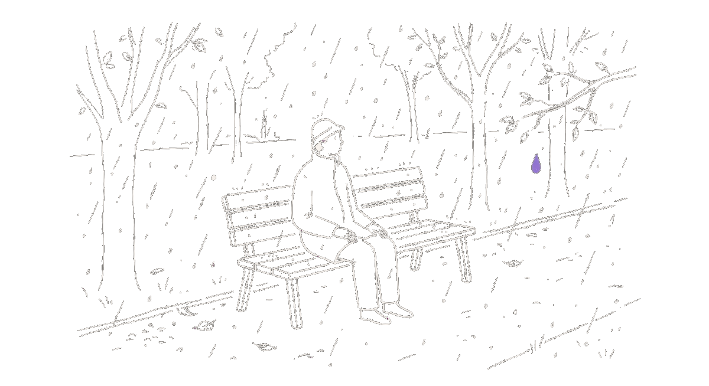
Position 3 posits that suffering is an inherent aspect of human existence. It is presented as neither requiring concealment nor possessing inherent significance beyond its presence. This perspective suggests suffering is a fundamental condition, comparable to other universal experiences.
What would position 3 look like in practice? The evidence suggests three structural requirements:
RECONNECT DIAGNOSIS TO CONTEXT
The false positive rate in primary care depression diagnosis (~25%)[32]Mojtabai, Johns Hopkins, depression overdiagnosis (2013) → and the DSM-5’s removal of the bereavement exclusion[37]Frances, “DSM & Medicalization” (2022) → imply that diagnosis should be contextualized — not eliminated, but connected to the conditions that produce suffering. For individuals experiencing distress primarily due to adverse structural circumstances, the emphasis may shift from diagnostic labeling to addressing the systemic factors. Position 3 facilitates this distinction, allowing for an approach where suffering is neither necessarily concealed nor inherently pathologized.
REDISTRIBUTE ATTENTION
Shekhar’s research on digital permission structures offers a model: Black men’s mental health disclosure on YouTube operates through collective care rather than individual branding, with positive comments receiving 2.4× engagement.[38]Shekhar, “Digital Permission Structures” (2025), 2.4× positive engagement → This research suggests that the current attention economy is not the sole model for engagement. Alternative platforms and community structures may foster different modes of vulnerability expression, potentially prioritizing mutual support over individual performance. The persistent 48%–22% treatment gap, rather than being solely attributable to a lack of information, may also reflect challenges in how attention and resources are distributed within mental healthcare systems.
DECOUPLE IDENTITY FROM DIAGNOSIS
The 72%-to-27% gap between Gen Z women and Boomer men who see mental health as core identity[3]Skeptic Research Center (2022), n = 3,014 American adults → may indicate a cultural tendency for younger generations, particularly women, to interpret aspects of selfhood through diagnostic frameworks. While the 46% formal diagnosis rate among Gen Z[5]Harmony Healthcare IT (2025), n = 1,010 → may reflect genuine clinical conditions, the additional 37% who self-identify with an undiagnosed condition — resulting in 83% viewing themselves through a clinical lens — suggests a pervasive adoption of diagnostic terminology as a primary means of understanding common human experiences. Position 3 proposes an alternative framework that allows for the acknowledgment of suffering without necessarily conflating it with one's core identity or defining characteristic.
ONE SENTENCE
This perspective suggests that the challenge lies not in the perceived ‘fashionability’ of certain conditions, but in a cultural context that may lack established frameworks for acknowledging ordinary suffering, potentially leading to a dichotomy between concealment and overt display of distress.
References
- Gallup, “Depression Rates Reach New Highs” (Feb 2023), n = 5,167
- CDC Youth Risk Behavior Survey, 2023 Results
- Skeptic Research Center (2022), n = 3,014, DASS-21 validated
- Zimmermann, “History of Melancholy” (1995)
- Harmony Healthcare IT (commercial report), “State of Gen Z Mental Health” (May 2025, forthcoming), n = 1,010
- Blue Shield of California (company poll), (Sept 2025, forthcoming)
- Ward & Mengesha, PMC (2019)
- SAMHSA NSDUH 2021–2023 Race/Ethnicity Companion Report
- Frink, “Romantic Melancholy” (2016)
- Washington Post, “Prozac Nation at 30” (2024)
- 2021 Facebook Files (Wall Street Journal); Meta internal research
- Frontiers in Psychology, algorithm rabbit hole study (2025, forthcoming)
- JMIR, Meta-analysis of 17 social media restriction RCTs (2024–25, forthcoming), n = 5,624
- Haidt & Twenge, “The Anxious Generation” data (2024)
- Scimatic, Self-diagnosis via social media prevalence (2024)
- Yeung, Ng & Abi-Jaoude, Canadian J. of Psychiatry (2022), 100 top ADHD TikToks
- Harvard Petrie-Flom, “Dr. TikTok” (2025, forthcoming)
- The Batt (student newspaper), “Depression Isn’t Aesthetic” (2024)
- Phase Learning (webzine), “Romanticizing Mental Illness” (2024)
- Current Psychology, TikTok MH content & symptom self-report (2026, forthcoming)
- DBSA, “Disparities in Mental Health” (2021)
- Daily Cal (student newspaper), “Social Media’s Sad Girl” (2022)
- Lancet meta-analysis (2025, forthcoming), 1.3M people, 421 studies
- Assari, “Social Determinants of Depression” PMC (2017)
- Mereish, “Depression at Intersection of Race, Sex, Sexual Orientation” PMC (2023)
- Bandinelli & Pinzón Arteaga, Mad in America (webzine), (2025, forthcoming)
- GlobeNewsWire (press release), Online therapy services market report (2025, forthcoming)
- TapTwice Digital (company blog), BetterHelp statistics (2024); $1.03B revenue
- First Session (commercial platform analysis), “BetterHelp Risk” (2025, forthcoming); $900M marketing spend
- PMC, “Unmasking Therapy-Speak” (2025, forthcoming)
- Rhetoric of Depression, UF Press (2023)
- Mojtabai, Johns Hopkins, depression overdiagnosis in primary care (2013)
- PMC, Canadian primary care MDD/GAD misdiagnosis rates
- CDC ADHD data; Psychiatric Research & Clinical Practice (2024)
- Article Club (blog), Discussion #502 (2025, forthcoming)
- Gronholm & Thornicroft, PMC (2022)
- Frances, “DSM & Medicalization” (2022)
- Shekhar, “Digital Permission Structures” (arXiv preprint), (2025, forthcoming)